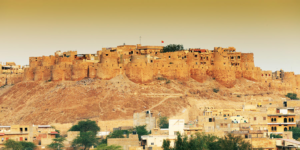
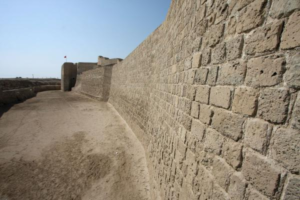
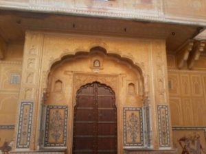
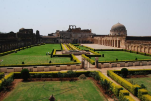
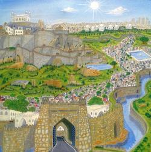

India is known for architecture, painting, language, and literature. Numerous structures were constructed in different architectural styles. The structures were of two kinds. .The first were forts, palaces, and gateways which were constructed for safety and protection. The second were temples, mosques, gardens, etc.
India is considered as a land of the forts. There had been many leaders in India who were brave and very much skilful. They had constructed many castles or forts. These forts have magnificent high level of engineering and architecture. In India, there are many forts. These regions have many beautiful forts that attract a large number of tourists every year.
Forts of India are famous for their style, design, and material used like marble or red sandstone. The style of architecture was known as the Corbelled style of architecture. The important feature of architecture was the use of the arch, the dome, and the minaret. To decorate the buildings, geometrical designs, flowers and Arabic calligraphy had a verse from the holy Quran.
The materials used for constructing forts differ from region to region. Stone was extensively used and gypsum was used for plastering buildings. Lime plaster was reserved for places that need to be secured against water leakage in roofs, canals, and drains.
The walls of the forts were often looked higher from the outside than the inside. The walls of forts were very thick. Stone was the most important material for building forts. A wall could be an earthen rampart faced with stone on both sides. They were used Lime mortar as a binding material for construction. The walls were decorated and the height of the walls is 36m -40m and width is 21m- 25m.
The gates of forts were much decorated. Gates of Indian forts were often high and wide. The length of the gate is 25 ft and width is 13 ft. The gate of the fort has steel spikes to protect it from elephants.
The shape of the bastion is semi-circular. It consists of three stories which having solid blocks of granite firmly cemented together or may be bound with iron clamps. The Weight of blocks was in the tons. There were some guns on the bastion which were used for defense purpose.
Gardens in forts were beautiful creations. It was designed in Mughal style. Large Gardens with water fountains and canals in north India were laid by many Muslims rulers. These gardens were placed within rectangular wall enclosure and divided into four quarters by artificial channels.
Inside the fort, there were palace or Mahal which were beautifully decorated with relief carving, floral inlay work with precious and semi-precious stones, and calligraphy. The royal palace was built for the emperor and their families.
Sheesh Mahal, Moti Mahal are some examples of palaces. The Sheesh Mahal was used as a private temple. Gold and silver leaves and a lot of mirror pieces were used as decorations. The Diwan-i Khas was a hall of private audience. It is a highly ornamented pillared hall.
Numbers of Baolis were built during the medieval times. Baolis are step-wells to obtain underground water. It was an intelligent and durable technique for obtaining water. Baolis had a unique and beautiful architectural style with impressive appearances. Earthen pipes were used for water supply. These pipes would have been used to carry water to different places in the palace.
